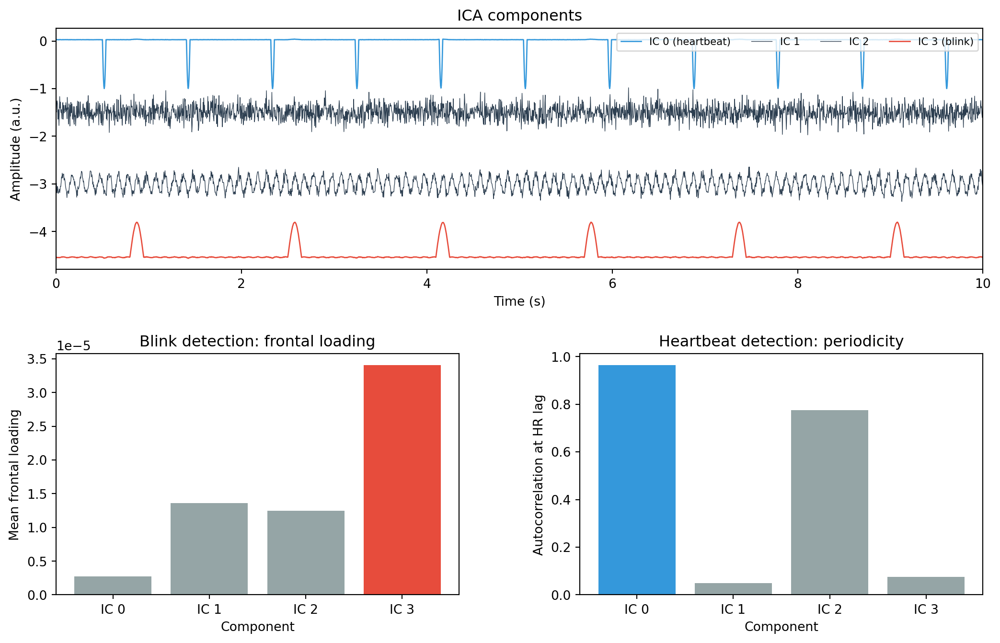

import mne
from mne.preprocessing import ICA
# Fit ICA
ica = ICA(n_components=20, method="infomax",
fit_params=dict(extended=True), random_state=42)
ica.fit(raw)
# Find components that correlate with the EOG channel
eog_indices, eog_scores = ica.find_bads_eog(raw)
print(f"EOG-related components: {eog_indices}")
print(f"Correlation scores: {eog_scores}")
# Mark them for exclusion
ica.exclude = eog_indices
# Plot the scores to see how clear the detection is
ica.plot_scores(eog_scores, title="EOG correlation scores")Identifying ICA components
artifacts
decomposition
How to tell artifact components from brain components: visual criteria for blinks, saccades, muscle, and heartbeat, automated detection with find_bads_eog() and find_bads_ecg(), and using proxy channels when dedicated EOG/ECG channels are unavailable.
Why identification matters
Running ICA is the easy part. The hard part is deciding which components are artifacts and which are brain activity. Every component you remove also removes some brain signal, because the separation is never perfect. Remove too few and your data stays contaminated. Remove too many and you distort the brain signals you care about.
This page covers the practical criteria for identifying artifact components: what to look for in the topography, time course, and spectrum, and how to use MNE’s automated detection methods to speed up the process.
The three views
When you inspect a component, you look at three things. Together, they give you a reliable picture of what the component represents.
- Topography (spatial pattern): where on the scalp does the component project? This is the most reliable cue and usually sufficient on its own for clear cases.
- Time course (waveform): what does the component look like over time? Intermittent sharp peaks suggest blinks. A regular rhythm suggests heartbeat. Sustained high-frequency bursts suggest muscle.
- Power spectrum: which frequencies dominate the component? Low-frequency power points to eye artifacts. A broad high-frequency bump points to muscle. A clear peak at the alpha frequency (8-13 Hz) suggests a brain source.
MNE’s ica.plot_properties() shows all three views in a single figure, which makes the decision process easier.
Visual criteria by artifact type
Eye blinks
Blink components are usually the easiest to identify:
- Topography: strong, symmetric frontal projection centred on Fp1 and Fp2. The pattern is positive at the front and drops off sharply toward posterior electrodes. The left-right symmetry distinguishes it from lateral eye movements.
- Time course: intermittent large deflections lasting 200-400 ms, with long quiet periods in between. The deflections have a smooth, rounded shape.
- Spectrum: dominated by low frequencies (below 5 Hz), with power falling off rapidly above that.
Confidence level: high. If the topography is clearly frontal and symmetric, and the time course shows intermittent sharp peaks, it is almost certainly a blink component. You will typically find one or two blink components.
Saccadic eye movements
Horizontal saccades produce a different pattern from blinks:
- Topography: left-right asymmetric frontal pattern. One side of the frontal scalp (around F7 or F8) is positive while the other is negative. This reflects the horizontal displacement of the corneo-retinal dipole.
- Time course: step-like transitions lasting 50-100 ms, often occurring in pairs (saccade and return). The steps are sharper and faster than blink deflections.
- Spectrum: also dominated by low frequencies, but often with slightly more power in the 5-15 Hz range than blink components.
Vertical eye movements look more like attenuated blinks: frontal topography, but with smaller amplitude and a more sustained waveform.
Muscle artifacts
Muscle components come from the temporalis, frontalis, or neck muscles:
- Topography: peripheral, concentrated at the edges of the electrode array. Temporalis muscle shows up at T7/T8 and F7/F8. Frontalis muscle appears at Fp1/Fp2 (but with a different spectral profile from blinks). Neck muscles project to posterior and temporal electrodes.
- Time course: either sustained tonic activity (if the muscle is constantly tense) or intermittent bursts. The waveform looks irregular and noisy rather than smooth.
- Spectrum: a broad spectral bump above 20 Hz, often extending to 40-50 Hz or higher. This high-frequency dominance is the strongest distinguishing feature. Brain components rarely have so much power above 30 Hz.
Muscle components can be tricky when they are intermittent, because a brief burst of muscle activity might look like a single event. The key is the spectrum: if a component’s power is concentrated above 20 Hz, it is very likely muscle.
Heartbeat (cardiac) artifacts
The heartbeat artifact appears when the electrical field of the heart reaches the scalp electrodes (which happens in all recordings, though it is sometimes too small to see):
- Topography: broad, diffuse pattern without a clear focal point. It can vary between subjects depending on body build and electrode placement.
- Time course: very regular peaks matching the heart rate (roughly 60-80 per minute, or once every 0.75-1 second). The QRS complex of the heartbeat appears as a sharp deflection, sometimes followed by a slower T-wave.
- Spectrum: peaks at the heart rate frequency (around 1 Hz) with harmonics.
The regularity of the time course is the strongest identifier. If a component has a very regular, rhythmic pattern at about 1 Hz that does not look like brain oscillations (which are less regular and more sinusoidal), it is likely a cardiac component.
Decision flowchart
When inspecting a component, you can follow this sequence:
- Look at the topography first. Is it frontal and symmetric? Likely a blink. Frontal and asymmetric? Likely a saccade. Peripheral (temporal or edge)? Likely muscle. Diffuse with no clear focal point? Could be heartbeat.
- Check the spectrum. If power is concentrated below 5 Hz, it supports an eye artifact classification. If there is a broad bump above 20 Hz, it supports muscle. If you see a clear alpha peak (8-13 Hz) with a smooth topography, it is probably brain.
- Look at the time course for confirmation. Intermittent sharp peaks = blinks. Step-like transitions = saccades. Regular rhythm at ~1 Hz = heartbeat. Sustained high-frequency noise = muscle.
- When in doubt, keep the component. Removing a brain component is worse than keeping a mild artifact, because you cannot undo the removal.
Automated detection with find_bads_eog()
MNE can automatically identify blink and eye movement components by correlating them with an EOG (electrooculography) channel. If your recording includes dedicated EOG channels, this is fast and reliable.
Using a proxy channel
Many EEG setups do not include dedicated EOG channels. In that case, you can use a frontal EEG channel (like Fp1) as a proxy. The blink artifact is so large at frontal channels that they work well as a substitute.
# Use Fp1 as an EOG proxy
eog_indices, eog_scores = ica.find_bads_eog(raw, ch_name="Fp1")
print(f"EOG components (using Fp1 as proxy): {eog_indices}")The method works by creating synthetic EOG epochs (time-locked to detected blink events), computing the average blink waveform for each component, and then correlating it with the average blink in the proxy channel. Components with a high correlation are flagged.
Automated detection with find_bads_ecg()
The same approach works for heartbeat artifacts:
# Find components that correlate with the ECG channel
ecg_indices, ecg_scores = ica.find_bads_ecg(raw)
print(f"ECG-related components: {ecg_indices}")
# If no ECG channel is available, MNE will try to use
# magnetometer channels (MEG) or create a synthetic ECG.
# For EEG-only data without an ECG channel, this may not work
# automatically. You might need to identify cardiac components
# by visual inspection instead.Combining automated and manual inspection
The automated methods are a good starting point, but they should not be the final word. A recommended workflow is:
- Run
find_bads_eog()andfind_bads_ecg()to get initial candidates. - Plot the flagged components with
ica.plot_properties()to verify that the detections make sense. - Browse the remaining components with
ica.plot_sources()andica.plot_components()to check for artifacts the automated methods may have missed. - Add or remove components from
ica.excludeas needed.
# Step 1: Automated detection
eog_idx, _ = ica.find_bads_eog(raw, ch_name="Fp1")
ecg_idx, _ = ica.find_bads_ecg(raw)
ica.exclude = list(set(eog_idx + ecg_idx)) # combine, removing duplicates
# Step 2: Verify flagged components
ica.plot_properties(raw, picks=ica.exclude)
# Step 3: Browse all components
ica.plot_components()
ica.plot_sources(raw)
# Step 4: Adjust the exclude list if needed
# ica.exclude.append(7) # add another artifact component
# ica.exclude.remove(3) # un-flag a component that looks like brain
# Apply the correction
ica.apply(raw)Working example
The code below simulates data with both blink and heartbeat artifacts, fits ICA, and demonstrates how to identify each artifact type using the frontal loading (for blinks) and periodicity (for heartbeat) of the recovered components.
import numpy as np
import matplotlib.pyplot as plt
from sklearn.decomposition import FastICA
rng = np.random.default_rng(42)
# ── Parameters ─────────────────────────────────────────────────
n_channels = 8
sfreq = 256
duration = 10
n_samples = sfreq * duration
times = np.arange(n_samples) / sfreq
channel_names = ["Fp1", "Fp2", "F3", "F4", "C3", "C4", "O1", "O2"]
# ── Source 1: Alpha oscillation (brain) ────────────────────────
alpha = np.sin(2 * np.pi * 10 * times)
alpha += 0.3 * rng.standard_normal(n_samples)
# ── Source 2: Blink artifact ──────────────────────────────────
blink = np.zeros(n_samples)
for bt in [0.8, 2.5, 4.1, 5.7, 7.3, 9.0]:
idx = int(bt * sfreq)
width = int(0.15 * sfreq)
if idx + width < n_samples:
t_b = np.arange(width) / sfreq
blink[idx:idx + width] = 5 * np.sin(np.pi * t_b / (width / sfreq))
# ── Source 3: Heartbeat artifact ──────────────────────────────
heartbeat = np.zeros(n_samples)
heart_rate = 1.1 # beats per second (~66 bpm)
beat_times = np.arange(0.5, duration, 1 / heart_rate)
for bt in beat_times:
idx = int(bt * sfreq)
# QRS complex: sharp, brief spike
qrs_width = int(0.04 * sfreq)
if idx + qrs_width < n_samples:
t_qrs = np.arange(qrs_width) / sfreq
heartbeat[idx:idx + qrs_width] = 2 * np.sin(
np.pi * t_qrs / (qrs_width / sfreq))
# ── Source 4: Background noise ─────────────────────────────────
noise = rng.standard_normal(n_samples)
# ── Mixing matrix ─────────────────────────────────────────────
# Blink: strong frontal. Heartbeat: diffuse, slightly stronger centrally.
mixing = np.array([
[0.4, 1.0, 0.3, 0.4], # Fp1
[0.4, 0.95, 0.3, 0.4], # Fp2
[0.7, 0.3, 0.4, 0.3], # F3
[0.7, 0.25, 0.4, 0.3], # F4
[0.9, 0.05, 0.5, 0.3], # C3
[0.9, 0.05, 0.5, 0.3], # C4
[1.0, 0.02, 0.3, 0.2], # O1
[1.0, 0.02, 0.3, 0.2], # O2
])
sources_true = np.vstack([alpha, blink, heartbeat, noise])
data = mixing @ sources_true
data *= 30e-6 / data.std()
# ── Fit ICA ────────────────────────────────────────────────────
ica = FastICA(n_components=4, random_state=42, max_iter=1000)
components = ica.fit_transform(data.T).T
ica_mixing = ica.mixing_
# ── Criterion 1: frontal loading (for blinks) ─────────────────
frontal_loading = np.abs(ica_mixing[:2, :]).mean(axis=0)
blink_ic = np.argmax(frontal_loading)
# ── Criterion 2: autocorrelation at heart rate lag ─────────────
heart_lag = int(sfreq / heart_rate) # samples per heartbeat
autocorr_at_lag = np.zeros(4)
for i in range(4):
c = components[i]
c_norm = (c - c.mean()) / c.std()
autocorr_at_lag[i] = np.abs(np.correlate(
c_norm[:n_samples - heart_lag],
c_norm[heart_lag:]
)[0] / (n_samples - heart_lag))
cardiac_ic = np.argmax(autocorr_at_lag)
print(f"Blink component: IC {blink_ic} "
f"(frontal loading = {frontal_loading[blink_ic]:.4f})")
print(f"Heartbeat component: IC {cardiac_ic} "
f"(autocorrelation = {autocorr_at_lag[cardiac_ic]:.4f})")
# ── Visualisation ──────────────────────────────────────────────
fig = plt.figure(figsize=(13, 8))
gs = fig.add_gridspec(2, 2, hspace=0.35, wspace=0.3)
# Top row: ICA component time courses
ax_top = fig.add_subplot(gs[0, :])
offset = 0
for i in range(4):
trace = components[i] / np.max(np.abs(components)) + offset
if i == blink_ic:
colour, label_extra, lw = "#e74c3c", " (blink)", 1.0
elif i == cardiac_ic:
colour, label_extra, lw = "#3498db", " (heartbeat)", 1.0
else:
colour, label_extra, lw = "#2c3e50", "", 0.5
ax_top.plot(times, trace, lw=lw, color=colour,
label=f"IC {i}{label_extra}")
offset -= 1.5
ax_top.set_xlabel("Time (s)")
ax_top.set_ylabel("Amplitude (a.u.)")
ax_top.set_title("ICA components")
ax_top.legend(loc="upper right", fontsize=8, ncol=4)
ax_top.set_xlim(0, duration)
# Bottom left: frontal loading bar chart
ax_bl = fig.add_subplot(gs[1, 0])
colours_fl = ["#e74c3c" if i == blink_ic else "#95a5a6" for i in range(4)]
ax_bl.bar(range(4), frontal_loading, color=colours_fl)
ax_bl.set_xlabel("Component")
ax_bl.set_ylabel("Mean frontal loading")
ax_bl.set_title("Blink detection: frontal loading")
ax_bl.set_xticks(range(4))
ax_bl.set_xticklabels([f"IC {i}" for i in range(4)])
# Bottom right: autocorrelation at heart rate lag
ax_br = fig.add_subplot(gs[1, 1])
colours_ac = ["#3498db" if i == cardiac_ic else "#95a5a6" for i in range(4)]
ax_br.bar(range(4), autocorr_at_lag, color=colours_ac)
ax_br.set_xlabel("Component")
ax_br.set_ylabel("Autocorrelation at HR lag")
ax_br.set_title("Heartbeat detection: periodicity")
ax_br.set_xticks(range(4))
ax_br.set_xticklabels([f"IC {i}" for i in range(4)])
plt.show()Blink component: IC 3 (frontal loading = 0.0000)
Heartbeat component: IC 0 (autocorrelation = 0.9637)
The top panel shows the four recovered ICA components. The blink component (red) has intermittent sharp peaks, while the heartbeat component (blue) shows a regular rhythm. The bottom-left bar chart shows the mean frontal loading of each component: the blink component stands out clearly because blinks project strongly to Fp1 and Fp2. The bottom-right chart shows the autocorrelation at the expected heartbeat lag: the cardiac component has the strongest periodicity.
In practice, MNE’s find_bads_eog() and find_bads_ecg() perform similar calculations (correlation with EOG/ECG channels) but with more refined signal processing. The simple heuristics shown here illustrate the underlying logic.
Key takeaways
- Inspect three features of each component: topography (where it projects on the scalp), time course (what it looks like over time), and spectrum (which frequencies dominate).
- Blinks: frontal, symmetric topography; intermittent sharp peaks; low-frequency spectrum.
- Saccades: frontal, asymmetric (left-right) topography; step-like transitions; low-frequency spectrum.
- Muscle: peripheral topography (temporal or edge electrodes); high-frequency spectral bump above 20 Hz; irregular, noisy waveform.
- Heartbeat: diffuse topography; very regular rhythm at ~1 Hz; sharp QRS-like peaks.
- Use
ica.find_bads_eog()to detect blink/eye components automatically. If you have no dedicated EOG channel, use a frontal channel (like Fp1) as a proxy. - Use
ica.find_bads_ecg()for heartbeat components. This requires an ECG channel or, for MEG data, magnetometer channels. - Always verify automated detections with visual inspection. The automated methods are a starting point, not a final answer.
- When in doubt, keep the component. Removing brain signal is harder to correct than leaving a mild artifact in the data.